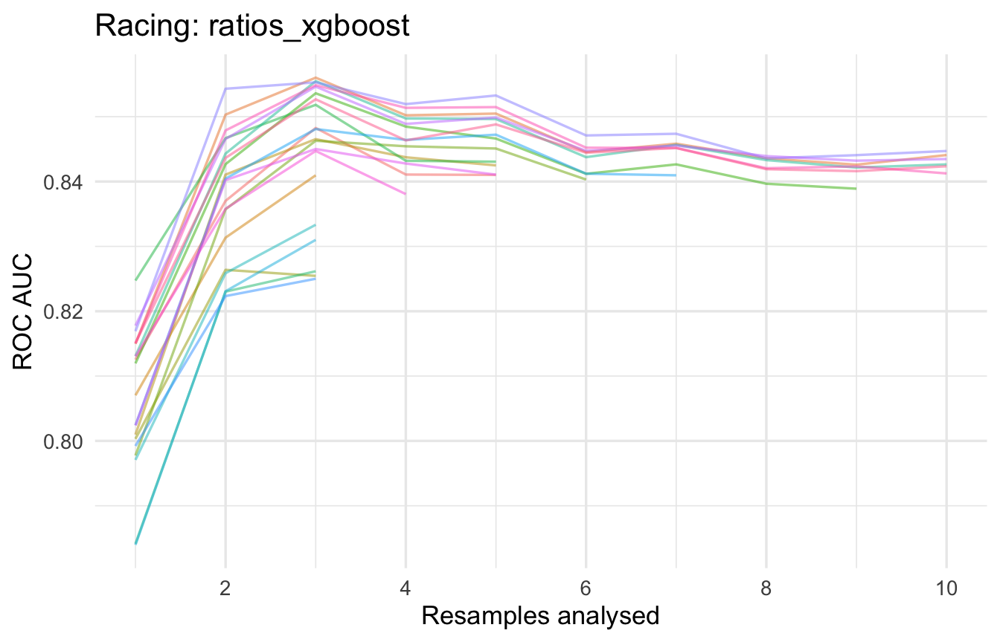

How to compare several models fairly in R with workflowsets: one resampling scheme, racing with finetune, a ranked leaderboard, and a decision threshold tuned for the credit desk instead of for accuracy.
Machine Learning
Data Science
Finance
Author
Wlademir Ribeiro Prates
Published
October 19, 2026
“Which model should we use?” is a question I hear in almost every project, and it is usually answered badly. Someone fits a random forest because it worked last time. Someone else argues for gradient boosting because it wins Kaggle. A third person wants logistic regression because the risk committee can read it. Each one has a point and none of them has evidence, because the models were never compared on the same data, with the same resamples, under the same metric.
A model leaderboard fixes that. It is one table where every candidate was trained and evaluated under identical rules, ranked by a metric you chose before looking. The tidymodels ecosystem has a package for exactly this, workflowsets, and the recent releases of tune and finetune made it fast enough to run on a laptop. This post builds one for a credit approval problem and then goes one step further than the leaderboard: it turns the winning model into a decision that makes money.
What you need
Comfortable reading R and the basics of tidymodels: recipes, model specs and workflows. If you have fit one model with fit_resamples() you are fine.
No private data. The example uses credit_data, which ships with the modeldata package.
Patience for one coffee. The full race takes about six minutes on three cores. Everything is seeded.
Package versions matter here because the tooling changed in 2025 and 2026: tune 2.x dropped foreach in favour of mirai and future for parallel work, added tunable postprocessors through the tailor package, and renamed the .config identifiers. Code from older tutorials will mostly still run, but the output will look different.
The five steps
Split once, resample once. Every model sees the same folds. This is the rule that makes the comparison fair.
Define the candidates. A small set of preprocessors and a small set of models.
Cross them into a workflow set. Each combination becomes one row of a tibble.
Race them. Tune every workflow with the same budget and let bad candidates drop out early.
Read the leaderboard, then make the decision. Rank, check whether the winner is really better, and pick the threshold that fits the business.
Steps 1 to 4 are mechanics. Step 5 is where the value is, and it is where most leaderboards stop too early.
The data are 4,454 consumer credit applications from a Spanish lender, each labelled good or bad depending on whether the loan was repaid. The predictors are the ones an underwriter would ask about: years in the current job, home ownership, income, assets, debt, the amount requested and the price of the good being financed. The bad rate is 28.2%, which is high for a credit book and makes the decision interesting: approve everyone and you lose money, decline everyone and you have no business.
The question for the model is not “is this applicant bad?” but “should we approve this loan?”. Keep that distinction in mind. It comes back in step 5.
The test set is locked away until the very end. All comparisons happen on the ten folds, and every model gets the same ten folds. If you compare models tuned on different resamples, differences in the folds leak into differences between models and the leaderboard becomes noise with a ranking.
Step 2: two preprocessors, five models
The first preprocessor does the minimum a model needs: impute missing values, encode categories, drop constant columns, normalise.
The second one adds what a credit analyst would compute by hand before looking at any model. Underwriting runs on ratios, not on raw amounts: how much of the price is being financed, how many months of income the loan represents, how much of the income is already committed to debt and how much the monthly instalment will take.
Putting both in the leaderboard answers a second question for free: does domain feature engineering still matter when the model is a tree ensemble that can, in theory, learn interactions on its own?
The five models cover the usual suspects for tabular data. Each tunes its main parameters; the number of trees is fixed to keep the race short.
Two preprocessors times five models gives ten workflows, each identified by preprocessor_model. The option column holds per-workflow settings, and this is where the default tuning ranges can be corrected. The default range for learn_rate in dials goes down to \(10^{-10}\), which with 500 trees means a model that barely moves from its starting point. Both boosting engines get a tighter range.
A full grid search would fit every candidate on every fold: twenty candidates times ten folds times ten workflows is 2,000 model fits before anything is ranked. Racing avoids most of that. After a few folds, it runs a repeated-measures ANOVA on the per-fold metrics and drops every candidate that is already significantly worse than the leader. Only the survivors see the remaining folds.
The metric set matters. The first metric is the one racing uses to eliminate, so it goes first.
Parallel processing in tune 2.x is a one-liner with mirai. Three workers is a conservative choice for a laptop with 16 GB; raise it if you have the memory.
The result column now holds one racing result per workflow. The race for the boosted trees looked like this:
Code
credit_res |>extract_workflow_set_result("ratios_xgboost") |>plot_race() +labs(title ="Racing: ratios_xgboost", y ="ROC AUC", x ="Resamples analysed") +theme(legend.position ="none")

Each line is a candidate. Most are eliminated after the third fold, and only a handful run the full ten. The time saved is spent on more workflows, which is the right trade.
rank_results() is the leaderboard. With select_best = TRUE it keeps only the best configuration of each workflow, so there is one row per workflow and metric.
The ratio features helped every model. Each ratios_* row sits above its plain_* twin, including the tree ensembles that could in theory learn the ratios themselves. On 3,500 rows, in theory is not the same as in practice.
The top three are a tie. The error bars of ratios_xgboost, ratios_lightgbm and plain_xgboost overlap almost entirely. The ranking says xgboost won; the uncertainty says any of the three would do.
Sensitivity is low everywhere. Around half of the bad loans are missed at the default 50% cutoff. That is not a modelling failure; it is the wrong cutoff, and step 5b deals with it.
Step 5b: is the winner really better?
A leaderboard ranks means. Means hide the fact that every model was evaluated on the same ten folds, which is paired data. The right comparison is the fold-by-fold difference against the leader, with its own standard error, exactly as a paired t-test would do it. This is the same logic as the decision flow for hypothesis tests: same units measured twice, so compare the differences.
Only the models whose interval excludes zero are convincingly worse than the leader. 3 of the nine are statistical ties: ratios_lightgbm, plain_xgboost, and ratios_rf. That is the honest reading of the leaderboard: not “xgboost wins” but “with ratio features, the two boosting engines and the random forest are indistinguishable at this sample size, and the logistic regression is only just behind”.
When the top is a tie, the deciding factors stop being statistical. Which model can the risk committee read? Which has the fewest moving parts in production? glmnet is a dozen coefficients and no external binary. LightGBM is a compiled library with its own versioning. Those questions are not in the table, and they should decide the tie.
For this post the leader stays. It is worth looking at what won:
Trees of depth 1 with a small learning rate. With depth 1 the boosted ensemble is a sum of single splits, which is an additive model with automatic binning. It is closer to the logistic regression than its name suggests, and it explains why the two sit so near each other.
Step 5c: from leaderboard to decision
The leaderboard ranks probability quality. The business needs a yes or no per application, and the cutoff that converts one into the other should come from the economics, not from the default 0.5.
The economics here are simple and stated up front. A repaid loan earns roughly 10% of its amount in interest margin. A defaulted loan loses about 60% of its amount after recovery. A declined application earns and loses nothing.
Under these numbers a loan is worth approving only if its probability of default is below 14.3%: the break-even point where \(0.10 \cdot (1 - p) = 0.60 \cdot p\). The portfolio’s base rate is twice that, so the default cutoff of 50% is guaranteed to approve loans that lose money.
The out-of-fold predictions saved during the race are the right place to check this. They were made on data each model had not seen, and they are free.
Code
oof <- credit_res |>extract_workflow_set_result(best_id) |>collect_predictions(parameters = best_params) |>left_join(credit_train |>mutate(.row =row_number()) |>select(.row, Amount), by =".row")profit_curve <-map(seq(0.05, 0.95, by =0.05), \(th) {credit_pnl(oof, approve = oof$.pred_bad < th) |>mutate(threshold = th)}) |>list_rbind()best_threshold <- profit_curve |>slice_max(profit_per_1000, n =1) |>pull(threshold)ggplot(profit_curve, aes(threshold, profit_per_1000)) +geom_hline(yintercept =0, colour ="grey60") +geom_vline(xintercept = best_threshold, linetype ="dashed", colour = pal[1]) +geom_line(colour = pal[2], linewidth =1) +geom_point(colour = pal[2]) +scale_x_continuous(labels = scales::percent) +scale_y_continuous(labels = scales::label_comma()) +labs(x ="Approve if P(bad) is below", y ="Profit per 1,000 applications",title ="Out-of-fold profit curve for the leader")
The curve peaks at a threshold of 15%, close to the break-even point and a long way from 50%. At 50% the lender approves four out of five applications and loses money on the book. At 15% it approves fewer than half and the book is profitable. Same model, same probabilities, a different sentence in the policy document.
Putting the threshold inside the model
This is where tailor earns its place. A postprocessor is part of the workflow, so the cutoff travels with the model: whoever calls predict() in production gets the class decision the business agreed on, not the 50% default and a reminder in the documentation.
last_fit() trains on the full training set and evaluates once on the test set that was locked away in step 1. The ROC AUC is in line with the resampling estimate, which is what you want to see: the leaderboard did not overfit the folds. Sensitivity and specificity have swapped places compared with the leaderboard, because the threshold now says “decline unless clearly good”.
The sentence for the credit committee is the last row: approve the 82% of applications the model is confident about, keep the bad rate on the approved book near 19%, and turn a loss-making portfolio into a profitable one. The AUC never appears in that sentence.
Reading leaderboards without fooling yourself
Same folds or no comparison. The leaderboard is only fair because every workflow saw identical resamples. Never compare numbers from different vfold_cv() calls.
Rank on the folds, confirm on the test set, once. The test set answers “did the leaderboard generalise?”. Using it to choose between models turns it into one more fold and you lose your only honest estimate.
Error bars first, rank second. A gap smaller than two standard errors is a tie. Treat it as one and let interpretability and operations decide.
Pick the metric before the race. Racing eliminates on the first metric in the set. Change the order and you change who survives.
Racing is a heuristic. A candidate that only shines with an unusual configuration can be eliminated on the early folds. If a model surprises you by doing badly, rerun it alone with tune_grid() before trusting the result.
Probability quality and decision quality are different problems. AUC and Brier measure the first; the cutoff and the cost matrix decide the second. A leaderboard that stops at AUC has done half the job.
Seeds and versions. tune 2.x changed the random streams, so results will not match objects created with tune 1.x. Record the versions with the leaderboard.
Limitations
The cost assumptions (10% margin, 60% loss) are illustrative. In a real desk they come from finance, differ by product and change with interest rates. The method does not change; the numbers do.
The profit curve uses out-of-fold predictions, which is honest, but the threshold was still chosen by looking at those predictions. A stricter workflow tunes the threshold inside the resampling with adjust_probability_threshold(threshold = tune()), at the cost of a custom profit metric.
Ten workflows is a small leaderboard. Adding more preprocessors (interaction terms, splines, target encoding of Job) or more engines is a matter of adding rows, and racing keeps the cost reasonable.
The class imbalance was handled only through the threshold. Resampling methods from the themis package could be a third preprocessor in the set.
The post ranks a single metric. With several objectives, such as AUC and calibration, the desirability2 package can rank on a combination.
Cheat sheet
Task
Function
Build the grid of preprocessors times models
workflow_set(preproc, models, cross = TRUE)
Change settings for one workflow
option_add(id = ..., param_info = ..., control = ...)
Tune or resample every workflow
workflow_map(fn, ...) with fn one of "tune_grid", "tune_race_anova", "fit_resamples"
Kuhn, M., Couch, S., Hvitfeldt, E. & Frick, H. (2025). tune version 2.0.0: parallel processing with mirai and postprocessing with tailor. The April 2026 tidymodels releases cover tune 2.1.0 and yardstick 1.4.0.
The natural follow-up is to stop choosing at all: the stacks package blends the top of a leaderboard into one ensemble, using the same workflow set as input. That is the next post in this series.
Source Code
---title: "Stop picking one model: build a leaderboard with tidymodels"description: "How to compare several models fairly in R with workflowsets: one resampling scheme, racing with finetune, a ranked leaderboard, and a decision threshold tuned for the credit desk instead of for accuracy."author: "Wlademir Ribeiro Prates"date: "2026-10-19"categories: [Machine Learning, Data Science, Finance]image: preview.pngformat: html: include-after-body: disqus.html---```{r}#| include: falsesuppressPackageStartupMessages({library(tidymodels)library(finetune)library(bonsai)library(tailor)library(reactable)})tidymodels_prefer()theme_set(theme_minimal(base_size =13))pal <-c("#4582ec", "#22325e", "#9aa5b1", "#e8a33d", "#6c5ce7")options(width =90)```"Which model should we use?" is a question I hear in almost every project, and it is usually answered badly. Someone fits a random forest because it worked last time. Someone else argues for gradient boosting because it wins Kaggle. A third person wants logistic regression because the risk committee can read it. Each one has a point and none of them has evidence, because the models were never compared on the same data, with the same resamples, under the same metric.A **model leaderboard** fixes that. It is one table where every candidate was trained and evaluated under identical rules, ranked by a metric you chose before looking. The tidymodels ecosystem has a package for exactly this, workflowsets, and the recent releases of tune and finetune made it fast enough to run on a laptop. This post builds one for a credit approval problem and then goes one step further than the leaderboard: it turns the winning model into a decision that makes money.## What you need- Comfortable reading R and the basics of tidymodels: recipes, model specs and workflows. If you have fit one model with `fit_resamples()` you are fine.- No private data. The example uses `credit_data`, which ships with the modeldata package.- Patience for one coffee. The full race takes about six minutes on three cores. Everything is seeded.Package versions matter here because the tooling changed in 2025 and 2026: tune 2.x dropped foreach in favour of mirai and future for parallel work, added tunable postprocessors through the tailor package, and renamed the `.config` identifiers. Code from older tutorials will mostly still run, but the output will look different.## The five steps1. **Split once, resample once.** Every model sees the same folds. This is the rule that makes the comparison fair.2. **Define the candidates.** A small set of preprocessors and a small set of models.3. **Cross them into a workflow set.** Each combination becomes one row of a tibble.4. **Race them.** Tune every workflow with the same budget and let bad candidates drop out early.5. **Read the leaderboard, then make the decision.** Rank, check whether the winner is really better, and pick the threshold that fits the business.Steps 1 to 4 are mechanics. Step 5 is where the value is, and it is where most leaderboards stop too early.## The problem: who gets the loan?```{r}data(credit_data, package ="modeldata")credit <-as_tibble(credit_data)n_apps <-nrow(credit)bad_rate <-mean(credit$Status =="bad")glimpse(credit)```The data are `r format(n_apps, big.mark = ",")` consumer credit applications from a Spanish lender, each labelled `good` or `bad` depending on whether the loan was repaid. The predictors are the ones an underwriter would ask about: years in the current job, home ownership, income, assets, debt, the amount requested and the price of the good being financed. The `bad` rate is `r scales::percent(bad_rate, accuracy = 0.1)`, which is high for a credit book and makes the decision interesting: approve everyone and you lose money, decline everyone and you have no business.The question for the model is not "is this applicant bad?" but "should we approve this loan?". Keep that distinction in mind. It comes back in step 5.## Step 1: split once, resample once```{r}set.seed(2026)credit_split <-initial_split(credit, prop =0.8, strata = Status)credit_train <-training(credit_split)credit_test <-testing(credit_split)set.seed(2026)credit_folds <-vfold_cv(credit_train, v =10, strata = Status)credit_folds```The test set is locked away until the very end. All comparisons happen on the ten folds, and every model gets the same ten folds. If you compare models tuned on different resamples, differences in the folds leak into differences between models and the leaderboard becomes noise with a ranking.## Step 2: two preprocessors, five modelsThe first preprocessor does the minimum a model needs: impute missing values, encode categories, drop constant columns, normalise.```{r}rec_plain <-recipe(Status ~ ., data = credit_train) |>step_impute_median(all_numeric_predictors()) |>step_unknown(all_nominal_predictors()) |>step_dummy(all_nominal_predictors()) |>step_zv(all_predictors()) |>step_normalize(all_numeric_predictors())```The second one adds what a credit analyst would compute by hand before looking at any model. Underwriting runs on ratios, not on raw amounts: how much of the price is being financed, how many months of income the loan represents, how much of the income is already committed to debt and how much the monthly instalment will take.```{r}rec_ratios <-recipe(Status ~ ., data = credit_train) |>step_impute_median(all_numeric_predictors()) |>step_unknown(all_nominal_predictors()) |>step_mutate(loan_to_value = Amount /pmax(Price, 1),amount_to_income = Amount /pmax(Income, 1),debt_to_income = Debt /pmax(Income, 1),payment_to_income = (Amount /pmax(Time, 1)) /pmax(Income, 1) ) |>step_log(Income, Assets, Debt, Amount, Price, offset =1) |>step_dummy(all_nominal_predictors()) |>step_zv(all_predictors()) |>step_normalize(all_numeric_predictors())```Putting both in the leaderboard answers a second question for free: does domain feature engineering still matter when the model is a tree ensemble that can, in theory, learn interactions on its own?The five models cover the usual suspects for tabular data. Each tunes its main parameters; the number of trees is fixed to keep the race short.```{r}glmnet_spec <-logistic_reg(penalty =tune(), mixture =tune()) |>set_engine("glmnet")rf_spec <-rand_forest(mtry =tune(), min_n =tune(), trees =500) |>set_engine("ranger") |>set_mode("classification")xgb_spec <-boost_tree(trees =500, learn_rate =tune(),tree_depth =tune(), min_n =tune()) |>set_engine("xgboost") |>set_mode("classification")lgb_spec <-boost_tree(trees =500, learn_rate =tune(),tree_depth =tune(), min_n =tune()) |>set_engine("lightgbm") |>set_mode("classification")nnet_spec <-mlp(hidden_units =tune(), penalty =tune(), epochs =200) |>set_engine("nnet") |>set_mode("classification")```LightGBM is not a native parsnip engine; the bonsai package adds it. Loading bonsai is all it takes.## Step 3: cross them into a workflow set```{r}credit_set <-workflow_set(preproc =list(plain = rec_plain, ratios = rec_ratios),models =list(logistic = glmnet_spec, rf = rf_spec, xgboost = xgb_spec,lightgbm = lgb_spec, nnet = nnet_spec),cross =TRUE)credit_set```Two preprocessors times five models gives ten workflows, each identified by `preprocessor_model`. The `option` column holds per-workflow settings, and this is where the default tuning ranges can be corrected. The default range for `learn_rate` in dials goes down to $10^{-10}$, which with 500 trees means a model that barely moves from its starting point. Both boosting engines get a tighter range.```{r}boost_params <- xgb_spec |>extract_parameter_set_dials() |>update(learn_rate =learn_rate(c(-2.5, -0.5)))for (id inc("plain_xgboost", "ratios_xgboost", "plain_lightgbm", "ratios_lightgbm")) { credit_set <-option_add(credit_set, param_info = boost_params, id = id)}```## Step 4: race themA full grid search would fit every candidate on every fold: twenty candidates times ten folds times ten workflows is 2,000 model fits before anything is ranked. **Racing** avoids most of that. After a few folds, it runs a repeated-measures ANOVA on the per-fold metrics and drops every candidate that is already significantly worse than the leader. Only the survivors see the remaining folds.The metric set matters. The first metric is the one racing uses to eliminate, so it goes first.```{r}credit_metrics <-metric_set(roc_auc, brier_class, sensitivity, specificity)```Parallel processing in tune 2.x is a one-liner with mirai. Three workers is a conservative choice for a laptop with 16 GB; raise it if you have the memory.```{r}#| message: false#| warning: false#| results: hidemirai::daemons(3)set.seed(2026)credit_res <- credit_set |>workflow_map("tune_race_anova",resamples = credit_folds,grid =20,metrics = credit_metrics,control =control_race(save_pred =TRUE, save_workflow =TRUE),seed =2026 )mirai::daemons(0)``````{r}credit_res```The `result` column now holds one racing result per workflow. The race for the boosted trees looked like this:```{r}#| fig-height: 4.5credit_res |>extract_workflow_set_result("ratios_xgboost") |>plot_race() +labs(title ="Racing: ratios_xgboost", y ="ROC AUC", x ="Resamples analysed") +theme(legend.position ="none")```Each line is a candidate. Most are eliminated after the third fold, and only a handful run the full ten. The time saved is spent on more workflows, which is the right trade.```{r}survivors <- credit_res |>mutate(candidates =map_int(result, \(x) {collect_metrics(x) |>filter(.metric =="roc_auc") |>nrow() })) |>select(wflow_id, candidates)survivors```## Step 5a: the leaderboard`rank_results()` is the leaderboard. With `select_best = TRUE` it keeps only the best configuration of each workflow, so there is one row per workflow and metric.```{r}leaderboard <-rank_results(credit_res, rank_metric ="roc_auc", select_best =TRUE) |>select(wflow_id, .metric, mean, std_err, rank) |>pivot_wider(names_from = .metric, values_from =c(mean, std_err)) |>left_join(survivors, by ="wflow_id") |>separate_wider_delim(wflow_id, "_", names =c("preprocessor", "model"), cols_remove =FALSE) |>arrange(rank)best_id <- leaderboard$wflow_id[1]best_auc <- leaderboard$mean_roc_auc[1]``````{r}#| column: body-outsetleaderboard |>select(rank, model, preprocessor, mean_roc_auc, std_err_roc_auc, mean_brier_class, mean_sensitivity, mean_specificity, candidates) |>reactable(columns =list(rank =colDef(name ="#", width =50),model =colDef(name ="Model"),preprocessor =colDef(name ="Preprocessor"),mean_roc_auc =colDef(name ="ROC AUC", format =colFormat(digits =3)),std_err_roc_auc =colDef(name ="± SE", format =colFormat(digits =4)),mean_brier_class =colDef(name ="Brier", format =colFormat(digits =3)),mean_sensitivity =colDef(name ="Sensitivity", format =colFormat(digits =3)),mean_specificity =colDef(name ="Specificity", format =colFormat(digits =3)),candidates =colDef(name ="Candidates", width =100) ),defaultColDef =colDef(align ="center"),rowStyle =function(index) if (index ==1) list(fontWeight ="bold"),highlight =TRUE, compact =TRUE, borderless =TRUE, striped =FALSE,defaultPageSize =10 )``````{r}#| include: falseleaderboard_plot <- leaderboard |>mutate(wflow_id =reorder(wflow_id, mean_roc_auc)) |>ggplot(aes(mean_roc_auc, wflow_id, colour = model)) +geom_errorbar(aes(xmin = mean_roc_auc - std_err_roc_auc,xmax = mean_roc_auc + std_err_roc_auc), width =0.3) +geom_point(size =3) +scale_colour_manual(values = pal) +labs(x ="ROC AUC (mean ± SE over 10 folds)", y =NULL, colour =NULL,title ="Credit approval: model leaderboard") +theme(legend.position ="bottom")ggsave("posts/model-leaderboard-tidymodels/preview.png", leaderboard_plot,width =8, height =5, dpi =150, bg ="white")``````{r}#| fig-height: 5leaderboard_plot```Three things jump out.- **The ratio features helped every model.** Each `ratios_*` row sits above its `plain_*` twin, including the tree ensembles that could in theory learn the ratios themselves. On 3,500 rows, in theory is not the same as in practice.- **The top three are a tie.** The error bars of `r leaderboard$wflow_id[1]`, `r leaderboard$wflow_id[2]` and `r leaderboard$wflow_id[3]` overlap almost entirely. The ranking says xgboost won; the uncertainty says any of the three would do.- **Sensitivity is low everywhere.** Around half of the bad loans are missed at the default 50% cutoff. That is not a modelling failure; it is the wrong cutoff, and step 5b deals with it.## Step 5b: is the winner really better?A leaderboard ranks means. Means hide the fact that every model was evaluated on the same ten folds, which is paired data. The right comparison is the fold-by-fold difference against the leader, with its own standard error, exactly as a paired t-test would do it. This is the same logic as the [decision flow for hypothesis tests](../hypotheses/index.qmd): same units measured twice, so compare the differences.```{r}#| fig-height: 4.5best_configs <-rank_results(credit_res, rank_metric ="roc_auc", select_best =TRUE) |>filter(.metric =="roc_auc") |>select(wflow_id, .config)fold_auc <-collect_metrics(credit_res, summarize =FALSE) |>filter(.metric =="roc_auc") |>inner_join(best_configs, by =c("wflow_id", ".config")) |>select(wflow_id, id, auc = .estimate)paired <- fold_auc |>left_join(fold_auc |>filter(wflow_id == best_id) |>select(id, best_auc = auc), by ="id") |>mutate(gap = best_auc - auc) |>group_by(wflow_id) |>summarise(mean_gap =mean(gap), se =sd(gap) /sqrt(n()), .groups ="drop") |>filter(wflow_id != best_id) |>mutate(lower = mean_gap -2* se, upper = mean_gap +2* se,verdict =if_else(lower >0, "Leader is better", "Statistical tie"),wflow_id =reorder(wflow_id, -mean_gap) )ggplot(paired, aes(mean_gap, wflow_id, colour = verdict)) +geom_vline(xintercept =0, linetype ="dashed", colour ="grey60") +geom_errorbar(aes(xmin = lower, xmax = upper), width =0.3) +geom_point(size =3) +scale_colour_manual(values = pal[c(1, 3)]) +labs(x =paste0("ROC AUC gap to ", best_id, " (mean ± 2 SE, paired by fold)"),y =NULL, colour =NULL) +theme(legend.position ="bottom")``````{r}tied <- paired |>filter(verdict =="Statistical tie") |>arrange(mean_gap) |>pull(wflow_id)```Only the models whose interval excludes zero are convincingly worse than the leader. `r length(tied)` of the nine are statistical ties: `r knitr::combine_words(paste0("<code>", tied, "</code>"))`. That is the honest reading of the leaderboard: not "xgboost wins" but "with ratio features, the two boosting engines and the random forest are indistinguishable at this sample size, and the logistic regression is only just behind".When the top is a tie, the deciding factors stop being statistical. Which model can the risk committee read? Which has the fewest moving parts in production? glmnet is a dozen coefficients and no external binary. LightGBM is a compiled library with its own versioning. Those questions are not in the table, and they should decide the tie.For this post the leader stays. It is worth looking at what won:```{r}best_params <- credit_res |>extract_workflow_set_result(best_id) |>select_best(metric ="roc_auc")best_params```Trees of depth `r best_params$tree_depth` with a small learning rate. With depth 1 the boosted ensemble is a sum of single splits, which is an additive model with automatic binning. It is closer to the logistic regression than its name suggests, and it explains why the two sit so near each other.## Step 5c: from leaderboard to decisionThe leaderboard ranks probability quality. The business needs a yes or no per application, and the cutoff that converts one into the other should come from the economics, not from the default 0.5.The economics here are simple and stated up front. A repaid loan earns roughly 10% of its amount in interest margin. A defaulted loan loses about 60% of its amount after recovery. A declined application earns and loses nothing.```{r}margin_good <-0.10loss_bad <-0.60break_even <- margin_good / (margin_good + loss_bad)credit_pnl <-function(data, approve) { data |>mutate(approve = approve,pnl =case_when(!approve ~0, Status =="good"~ margin_good * Amount,TRUE~-loss_bad * Amount ) ) |>summarise(approval_rate =mean(approve),bad_rate_approved =mean(Status[approve] =="bad"),profit_per_1000 =1000*sum(pnl) /n() )}```Under these numbers a loan is worth approving only if its probability of default is below `r scales::percent(break_even, accuracy = 0.1)`: the break-even point where $0.10 \cdot (1 - p) = 0.60 \cdot p$. The portfolio's base rate is twice that, so the default cutoff of 50% is guaranteed to approve loans that lose money.The out-of-fold predictions saved during the race are the right place to check this. They were made on data each model had not seen, and they are free.```{r}#| fig-height: 4.5oof <- credit_res |>extract_workflow_set_result(best_id) |>collect_predictions(parameters = best_params) |>left_join(credit_train |>mutate(.row =row_number()) |>select(.row, Amount), by =".row")profit_curve <-map(seq(0.05, 0.95, by =0.05), \(th) {credit_pnl(oof, approve = oof$.pred_bad < th) |>mutate(threshold = th)}) |>list_rbind()best_threshold <- profit_curve |>slice_max(profit_per_1000, n =1) |>pull(threshold)ggplot(profit_curve, aes(threshold, profit_per_1000)) +geom_hline(yintercept =0, colour ="grey60") +geom_vline(xintercept = best_threshold, linetype ="dashed", colour = pal[1]) +geom_line(colour = pal[2], linewidth =1) +geom_point(colour = pal[2]) +scale_x_continuous(labels = scales::percent) +scale_y_continuous(labels = scales::label_comma()) +labs(x ="Approve if P(bad) is below", y ="Profit per 1,000 applications",title ="Out-of-fold profit curve for the leader")``````{r}profit_curve |>filter(threshold %in%c(0.10, 0.15, 0.20, 0.30, 0.50)) |>mutate(across(c(approval_rate, bad_rate_approved), \(x) scales::percent(x, accuracy =0.1)),profit_per_1000 = scales::comma(profit_per_1000)) |> knitr::kable(col.names =c("Threshold", "Approval rate", "Bad rate among approved","Profit per 1,000"),align ="r")```The curve peaks at a threshold of `r scales::percent(best_threshold)`, close to the break-even point and a long way from 50%. At 50% the lender approves four out of five applications and loses money on the book. At `r scales::percent(best_threshold)` it approves fewer than half and the book is profitable. Same model, same probabilities, a different sentence in the policy document.### Putting the threshold inside the modelThis is where tailor earns its place. A postprocessor is part of the workflow, so the cutoff travels with the model: whoever calls `predict()` in production gets the class decision the business agreed on, not the 50% default and a reminder in the documentation.```{r}#| message: false#| warning: falsefinal_wf <- credit_res |>extract_workflow(best_id) |>finalize_workflow(best_params) |>add_tailor(tailor() |>adjust_probability_threshold(threshold = best_threshold) )final_fit <-last_fit(final_wf, credit_split, metrics = credit_metrics)collect_metrics(final_fit)````last_fit()` trains on the full training set and evaluates once on the test set that was locked away in step 1. The ROC AUC is in line with the resampling estimate, which is what you want to see: the leaderboard did not overfit the folds. Sensitivity and specificity have swapped places compared with the leaderboard, because the threshold now says "decline unless clearly good".```{r}test_pred <-augment(final_fit)conf_mat(test_pred, Status, .pred_class)``````{r}test_pnl <-bind_rows(`Approve everyone`=credit_pnl(test_pred, rep(TRUE, nrow(test_pred))),`Model, default 50% cutoff`=credit_pnl(test_pred, test_pred$.pred_bad <0.5),`Model, tuned cutoff (in workflow)`=credit_pnl(test_pred, test_pred$.pred_class =="good"),.id ="policy")test_pnl |>mutate(across(c(approval_rate, bad_rate_approved), \(x) scales::percent(x, accuracy =0.1)),profit_per_1000 = scales::comma(profit_per_1000)) |> knitr::kable(col.names =c("Policy", "Approval rate", "Bad rate among approved","Profit per 1,000"),align =c("l", "r", "r", "r"))```The sentence for the credit committee is the last row: approve the `r scales::percent(test_pnl$approval_rate[3], accuracy = 1)` of applications the model is confident about, keep the bad rate on the approved book near `r scales::percent(test_pnl$bad_rate_approved[3], accuracy = 1)`, and turn a loss-making portfolio into a profitable one. The AUC never appears in that sentence.## Reading leaderboards without fooling yourself- **Same folds or no comparison.** The leaderboard is only fair because every workflow saw identical resamples. Never compare numbers from different `vfold_cv()` calls.- **Rank on the folds, confirm on the test set, once.** The test set answers "did the leaderboard generalise?". Using it to choose between models turns it into one more fold and you lose your only honest estimate.- **Error bars first, rank second.** A gap smaller than two standard errors is a tie. Treat it as one and let interpretability and operations decide.- **Pick the metric before the race.** Racing eliminates on the first metric in the set. Change the order and you change who survives.- **Racing is a heuristic.** A candidate that only shines with an unusual configuration can be eliminated on the early folds. If a model surprises you by doing badly, rerun it alone with `tune_grid()` before trusting the result.- **Probability quality and decision quality are different problems.** AUC and Brier measure the first; the cutoff and the cost matrix decide the second. A leaderboard that stops at AUC has done half the job.- **Seeds and versions.** tune 2.x changed the random streams, so results will not match objects created with tune 1.x. Record the versions with the leaderboard.## Limitations- The cost assumptions (10% margin, 60% loss) are illustrative. In a real desk they come from finance, differ by product and change with interest rates. The method does not change; the numbers do.- The profit curve uses out-of-fold predictions, which is honest, but the threshold was still chosen by looking at those predictions. A stricter workflow tunes the threshold inside the resampling with `adjust_probability_threshold(threshold = tune())`, at the cost of a custom profit metric.- Ten workflows is a small leaderboard. Adding more preprocessors (interaction terms, splines, target encoding of `Job`) or more engines is a matter of adding rows, and racing keeps the cost reasonable.- The class imbalance was handled only through the threshold. Resampling methods from the themis package could be a third preprocessor in the set.- The post ranks a single metric. With several objectives, such as AUC and calibration, the desirability2 package can rank on a combination.## Cheat sheet| Task | Function ||---|---|| Build the grid of preprocessors times models | `workflow_set(preproc, models, cross = TRUE)` || Change settings for one workflow | `option_add(id = ..., param_info = ..., control = ...)` || Tune or resample every workflow | `workflow_map(fn, ...)` with `fn` one of `"tune_grid"`, `"tune_race_anova"`, `"fit_resamples"` || Rank the results | `rank_results(rank_metric = ..., select_best = TRUE)` || Default leaderboard chart | `autoplot(wf_set, metric = ..., select_best = TRUE)` || Per-fold metrics for paired comparison | `collect_metrics(wf_set, summarize = FALSE)` || See how the race eliminated candidates | `plot_race(extract_workflow_set_result(wf_set, id))` || Pull one workflow's tuning result | `extract_workflow_set_result(wf_set, id)` || Pull the untrained workflow | `extract_workflow(wf_set, id)` || Best parameters and finalisation | `select_best()`, `finalize_workflow()` || Add a business cutoff to the workflow | `add_tailor(tailor() \|> adjust_probability_threshold(...))` || Final fit and test-set evaluation | `last_fit(split)`, `collect_metrics()`, `augment()` || Parallel resampling in tune 2.x | `mirai::daemons(n)` or `future::plan("multisession")` |## References and next steps- Kuhn, M. & Silge, J. *Tidy Modeling with R*, chapter 15: [Screening many models](https://www.tmwr.org/workflow-sets). The reference text for workflow sets.- The workflowsets vignette [Tuning and comparing models](https://workflowsets.tidymodels.org/articles/tuning-and-comparing-models.html) and the reference for [`rank_results()`](https://workflowsets.tidymodels.org/reference/rank_results.html).- Kuhn, M., Couch, S., Hvitfeldt, E. & Frick, H. (2025). [tune version 2.0.0](https://tidyverse.org/blog/2025/11/tune-2/): parallel processing with mirai and postprocessing with tailor. The [April 2026 tidymodels releases](https://opensource.posit.co/blog/2026-04-27_tidymodels-april-2026/) cover tune 2.1.0 and yardstick 1.4.0.- Kuhn, M. (2014). [Futility analysis in the cross-validation of machine learning models](https://arxiv.org/abs/1405.6974). The paper behind `tune_race_anova()`.- The `credit_data` documentation in [modeldata](https://modeldata.tidymodels.org/reference/credit_data.html).The natural follow-up is to stop choosing at all: the stacks package blends the top of a leaderboard into one ensemble, using the same workflow set as input. That is the next post in this series.